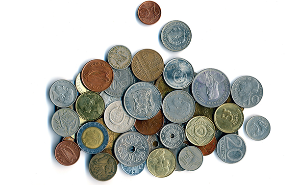
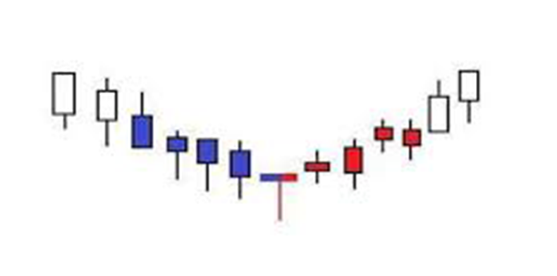

-
什么是外汇交易？
外汇交易市场（又称为Forex）是全球最大的金融市场，每日平均交易量高达5万亿美元。 Plus500提供24小时外汇对差价 合约交易服务，从周一上午悉尼时间08:00开盘，直至周五下午纽约时间16:00结束。从根本上讲，外汇交易是指用一种货 币兑换另一种货币。 我们提供70多种不同货币对的差价合约。
外汇世界主要包括三大市场：
即期外汇交易市场——即期交割货币对（通常为交易日加2天，即「 T+2」）。 远期外汇交易市场——约定在将来的某个日期以一定价格买卖一定数量货币的场外交易（OTC）合约。
外汇期货市场——外汇期货合约是由交易所制定的契约，规定在未来约定的日期以预定价格买卖指定数量的货币。外汇交易介绍如上文所提及，Forex是围绕货币对的交易，指的是买入一对货币组合中一种货币的同时卖出另外一种货币。外汇交易主要 在场外交易市场进行，但有时也在期货交易所交易。货币对通常被分为四大类：主要（Majors）、次要（ Minors）、交叉 （Crosses）和奇异（ Exotics）。主要货币对都是基于美元（USD）与其他主要货币进行交易，其他主要货币包括欧元 （EUR）、英镑（GBP）、瑞士法郎（CHF）、日元（JPY）、加元（CAD ）、澳元（AUD）和新西兰元（NZD）。次要 和交叉货币对则包括主要货币之一和众多交易量较小的货币。
外汇走势可以反映一系列不同的基本面，包括经济增长、 国际贸易流量和利率变动等。交易之前，您需要学会看懂货币对。 第一个货币被称为「基础货币」，第二个为「报价货币」。例如，如果您打算购买EUR/USD 货币对，这意味着您在买入欧 元卖出美元。如果欧元兑美元汇率上升，您将盈利。相反，如果欧元兑美元下跌，则亏损。 汇率以报价货币表示。因此，如果EUR/USD的汇率为1.1322，则代表1,000欧元可被兑换成1,132.20美元。外汇交易市场的影响因素有哪些？影响外汇交易市场的因素有很多，其中包括：
央行——世界上的货币供应量由各国央行决定。如果央行增加货币供应量，货币可能会贬值。央行通常还控制利率水平， 这对货币的强弱至关重要。
经济数据——有关经济状况的报告是货币强弱的重要指标。主要经济数据包括失业率、通货膨胀率和贸易差额等。
利率——当一个国家的央行意外修改利率时，往往会发生汇率波动。例如，如果央行突然决定下调货币利率，这通常会导 致货币价值大幅下降（市场对货币政策突然变化的反应）。
当然，这些理论因素在现实中的应用并非总是那么简单。您需要综合考虑多项指标和报价货币情况。另外，时机也非常重 要。您可以借助图表工具和 财经日历来判断建仓和平仓的时机。外汇交易中的关键术语以下是与外汇交易相关的术语定义，在线交易时您应当熟悉这些术语：
点值（Pip）：通常是指货币对价格的最小变动单位。
价差（Spread）：货币对的买/卖价格之差。
杠杆（Leverage）：可以用较少的资金参与更高额的交易。 1:50的杠杆率代表您投入200美元即可进行10,000美元的交易。
汇率（Exchange Rate）：基础货币相对报价货币的价值。
买入价（Bid）：做市商/经纪商愿意购买货币对的价格。
卖出价（Ask）：做市商/经纪商愿意出售货币对的价格。
了解受欢迎外汇对的昵称对交易也会有帮助。例如，GBP/USD通常被称为「Cable」， EUR/USD被称为「Fibre」。
此外，交易USD/JPY货币对被称为交易「Ninja」，USD/CHF被称为「Swissy」，而USD/CAD则是「Loonie」。受欢迎的外汇交易对大部分外汇交易是相对于美元来报价的，美元长久以来被作为国际认可的基础货币。如上文所述，所有主要货币对 （ Majors）交易均是基于美元，通常也是最受欢迎的交易货币对。许多交叉货币对（Crosses）如EUR/CHF、 EUR/GBP和AUD/JPY等的交易量也很高。
交易量最高的货币对主要包括：
EUR/USD：最常交易的货币对，交易量最大、流动性最强。
GBP/USD ：受欢迎的货币对之一，波动性通常高于EUR/USD。受脱欧以及由此造成的经济不确定性的影响，近期GBP/USD的波动性增强。
USD/JPY：交易量第二大的货币对，仅次于EUR/USD。由于日本的经济规模及其在全球经济贸易中的重要地位，该货币对的交易量很大。因其地理位置，日元交易还可以反映整个亚洲地区的经济和地缘政治状况。如何在交易中选择最佳的货币对？在选择货币对标的（无论是流行的货币对或当地货币/美元对）时，平台提供模拟帐户来测试您的交易策略。 交易时需谨慎小心，并在初期通过小额交易仔细观察市场在一段时间内的表现。平台提供模拟帐户、丰富的教育资源以及 新手和有经验的交易者均适合使用的交易工具。我们的价差是行业最低的，直观的交易平台旨在易于用户使用，同时不影 响提供深入的分析洞见和高级的交易选项。
 -
您应当知道的热门外汇交易术语
外汇交易（又称为Forex）是指一种货币与另一种货币进行交换，例如EUR/USD （欧元-美元）、USD/JPY （美元-日元） 和GBP/USD （英镑-美元）等。尽管如此，外汇交易并不如表面看起来那样简单，有时可能会非常复杂。因此，在参与货 币对交易之前，您应当熟悉外汇领域中的一些常用术语。了解这些术语是您创建交易策略的第一步。
外汇交易的基本术语以下是您在外汇交易时经常会遇到的基本术语：
点值（Pip）：通常是指货币对价格的最小变动单位。点值被用于衡量货币对的价格变动。
买入价（Bid）：做市商/经纪商愿意购买货币对的价格。
卖出价（Ask）：做市商/经纪商愿意出售货币对的价格。
价差（Spread）：买/卖价格之间的差额，由交易平台提供给交易者。如果差价合约服务商的价差低于其竞争对手，则代表交易者在买入和卖出货币对时可享受较小的价格差异。
基础货币（Base）：货币对中的第一个货币，又称为nominator（或top number）。
报价货币（Quote）：货币对中的第二个货币，又称为denominator（或bottom number）。
杠杆（Leverage）：交易者无需支付全部金额即可进行大额交易的手段。杠杆使交易者能够以较少的资金参与较大额的交易。例如，杠杆率为1:50代表您投入200美元即可进行10,000美元的交易，这也意味着亏损将被放大。市场交易术语
熊市（Bear Market）：市场处于下降期，交易者预测价格将下跌，这表明将会有更多卖空操作（或交易者「做空」）。
牛市（Bull Market）：市场处于上升期，交易者迫切增加多头操作（又称为「做多」）。
经纪商（Broker）：在交易者和金融机构之间执行交易的中介。
美联储（Federal Reserve）：管控美国经济活动的中央银行。通常缩写为 「Fed」。
国内生产总值（GDP）：一国经济活动的价值总和。
通货膨胀（Inflation）：国家/州经济中商品和服务价格的上涨速度。
利率（Interest Rates）：从银行或信贷结构借钱需支付的费率。利率水平受央行管控，这对货币的强弱至关重要。
伦敦银行同业拆借利率（LIBOR）：在伦敦银行间市场上银行同业之间相互拆借的利率，是常用的基准利率。
外汇交易波动性（Foreign Exchange Volatility）：货币对的波动水平，或衡量其价格变动的程度。代表交易的风险程度。指标与报告
相对强弱指数（RSI）：确定资产是超买或超卖的指标。它在0到100之间振荡。
商品渠道指数（CCI）：衡量相对于给定平均水平的数据差异，位于-100到+100之间。
移动平均收敛/发散指标（MACD）：可用于识别移动平均线，帮助投资者确定市场新的上升/下降趋势的一种交易指标。
相关性（Correlation）：两种资产之间的相互关系，表明它们彼此相关（或不相关）。相关性范围在+1和-1之间。
消费者物价指数（CPI）：通用的通货膨胀衡量指标，有助于跟踪商品和服务的价格。
采购经理人指数（PMI ）：衡量制造业前景的指标。
量化宽松（QE）：通过增加市场上的货币流通量达到重振经济的货币政策。外汇相关的其他术语
止损（Stop Loss）：指当投资亏损达到一定数额时斩仓出局的一种市场订单。
止赚（Take Profit）：指当投资盈利达到一定数额时获利平仓的一种市场订单。
基本面分析（Fundamental Analysis）：基于更广泛的经济和政治数据来预测货币对的走势。
技术分析（Technical Analysis）：基于走势图（历史表现）来预测货币对的未来走势。
主要货币对（ Majors）：世界上交易量最大的一系列货币对。它们在外汇市场中占主要份额，并且全部美元定价和交易。
次要货币对（Minors）：交易量和流动性均小于主要货币对。有时也被称为奇异货币对（Exotics）。
交叉货币对 (Crosses）：不涉及美元的货币对。流行的交叉货币对包括欧元兑英镑（EUR/GBP）、欧元兑瑞士法郎（EUR/CHF）和澳元兑日元（AUD/JPY）。 -
如何交易外汇差价合约
「差价合约」通常缩写为「CFD」，是一种允许交易者通过推测不同资产类型的价格走势来获利的交易形式，标的资产涵 盖货币对、股票、 商品 甚至加密货币。交易者无需持有实际的基础资产，而是专注于交易价格走势。 如果您考虑进行外汇差价合约交易，则需要了解基础的外汇交易市场。差价合约只是交易外汇货币对的另一种方式。 外汇报价由两种货币组成：基础货币和报价货币。货币对可以反映一个经济体相对于另一经济体的实力，汇率则是两个经 济体之间关系的变量。您应当尝试了解并衡量对每种货币影响最大的技术、政治和经济事件。 一旦您熟练掌握特定货币对的基本面情况后，便可以开始研究差价合约交易方式。
外汇交易 vs. 外汇差价合约外汇交易是指一定数量的一种货币与另一种货币之间的交换。例如，如果您打算购买GBP/USD，当英镑兑美元升值 （GBP/USD上涨），您将获利；当汇率下跌（GBP/USD下跌），则面临亏损。差价合约交易允许您在交易货币对时使用杠 杆，通过对基础工具价格走势的推测进行投机操作。差价合约是基于货币对建仓和平仓价格之间的差额进行现金结算，而 不是结算（或交割）一定数量的基础货币。
差价合约交易的另一个主要特征是，您可以借助杠杆工具，以较小的资金投入参与更大规模的交易。您应当牢记，增加敞 口在扩大潜在收益的同时，也将放大潜在亏损。 -
基本外汇交易策略和指标
交易者可以采用一系列外汇交易策略。每一种策略都可根据交易者的个性化需求进行量身定制，并与其他策略结合使用。 在决定哪种交易策略最适合您时，您应当考虑自己的个人目标、风险承受能力、交易经验和偏好。在探讨各种交易策略之 前，我们首先为您概述两种主要的交易分析方法。
基本面分析 vs. 技术分析
基本面交易者注重寻找更宏观的经济变量，以此判断货币对将升值或贬值。举一个简单的例子，如果发布的经济报告显示 经济特别强劲，则表明一种货币相对于另一种货币的价值可能上升。但是，如果所有交易者都认定经济强劲（早于报告发 布），则报告的影响力可能已经体现在市场价格中。
另一方面，技术分析者利用图表指标和走势来分析历史表现，以此确定货币对（例如欧元对美元EUR/USD）是否被超买或 超卖。基于数据统计趋势或模式（例如数量和价格变动即升值/贬值），交易者试图预测货币对的未来走势。当然，交易者 还可以结合技术和基本面分析来评估潜在的投资机会。头寸交易
头寸交易是一种交易者长期（一般是数周或数月）持有头寸的一种交易策略。头寸交易者通常使用基本面分析和经济数据。 但是，在开立新头寸时，头寸交易者也可能会使用技术分析。头寸交易者一般会等到货币对达到（预定的）支撑位后才进 行做多操作并持有数周。该交易类型对交易即时性（Immediacy）的要求较低，因为交易者不必担心盘中价格，且通常开 立的头寸数量较少（与其他交易策略相比）。尽管如此，与其他任何类型的交易一样，交易者都必须熟知市场基本面情况， 且头寸交易在很大程度上依赖于基本面分析。
简单移动平均线
简单移动平均线（SMA）是重要的技术指标，也是最常用的交易策略之一。 SMA被用于判断资产价格将上涨或下跌，由资 产的每日收盘价除以总天数计算得出平均值。交易者使用SMA创建的平均线结合其他技术指标来衡量价格的走势。 SMA线 可以取任意时间段，但是技术交易者一般采用50天、100天和200天移动平均线。
指数移动平均线
指数移动平均线（EMA）更加关注最近的收盘价。在使用这些平均线时，您应当考虑到它们是滞后指标，可能无法迅速反 映急剧的变化。对于较短期的交易，EMA可能缺乏足够的价格指标来保证可靠性。但是，它的确能够为交易者提供一个反 映总体趋势的清晰画面，这在外汇交易中非常有用。 EMA给予近期数据高于早期数据的权重，因此EMA往往比SMA更能准 时反映近期价格的波动情况。这也是为什么EMA是众多交易者首选平均线的原因之一。
相对强弱指数
相对强弱指数（RSI） 可与SMA平均线结合使用，用于进一步判断金融工具的未来趋势。 RSI用0到100的指数显示资产是超 买还是超卖。通常，资产指数低于30被视为超卖，而高于70则被视为超买。因此，如果指数低于30，则可能是购买的好时 机，而超过70则是出售的好时机。请记住，这仅是通用指标，您应当根据实际的交易对象来量身定制外汇交易策略。
布林带
和RSI一样，布林带通常与SMA平均线一同使用作为众多交易策略之一。但是，布林带与SMA线密不可分，它们是通过计算 给定SMA线的标准差得来。标准差是衡量波动性的一种方法。当布林带扩大时，表明市场的波动性已上升。布林带变窄则 表明市场变得更加稳定。布林带在SMA线的上方和下方设置上轨和下轨，SMA线有时被称为布林带的「中轨」。
-
哪些事件对外汇交易影响最大？
影响货币对价格的因素有很多，而且您也不可能考虑到所有影响价格的变量。但是，某些关键事件 是所有外汇交易者都需 要关注的，它们可能对整个经济产生涟漪效应。以下是一些可能对货币对价格产生影响的关键事件。
选举与政治事件选举可能对一国的货币产生重大影响。某些政党可能更偏向于保守和财政紧缩，而另一些政党则更加民主和倡导支出。 选举活动通常伴随着市场波动的上升。
宏观经济数据宏观经济数据作为最能反映经济实力的数据，是外汇交易中最重要且最常使用的信息。您可以在财经日历中找到该数据。 常用的宏观经济指标包括：
利率：一个国家相对于另一个国家的利率是决定汇率的最重要标准之一。较高的利率通常会导致货币升值。
通货膨胀率：最受关注的两个通胀指标是消费者价格指数（CPI）（一篮子消费品价格的加权平均值）和生产者物价指数（PPI）（国内生产者为生产购进物品和劳务价格变化的平均值）。低通胀会迫使中央银行降低本国利率，最终导致货币贬值。
就业率：有关一个国家就业率的新闻通常会决定人们对该国经济实力的看法。较高的就业率通常代表更加强劲的货币。
在美国，非农就业数据（NFP）是美国劳工部发布的官方就业数据，通常在每个月的第一个星期五发布。
信心调查：信心调查（Sentiment surveys）可用于大致衡量市场的预期。如消费者信心是与未来消费支出意向密切相关的指标。大多数发达国家/地区也会定期发布采购经理人指数（PMI），PMI是衡量未来企业支出意向的重要指标。
国内生产总值：GDP是衡量一个国家整体经济状况的重要指标，受到外汇交易者的密切关注。住房报告、就业数据和通胀率在决定一个国家的GDP方面起着重要作用。 -
最受欢迎的外汇对
某些货币对的流动性高于其他货币对，从理论上来讲，这 使得它们更易于交易。您将在下文找到交易量最大的流行货币对 相关内容。如果您希望了解更加详细的信息，网路上有许多参考信息可供您使用。 交叉对是指不涉及美元的货币对。流行的交叉货币对包括EUR/JPY（欧元兑日元）、GBP/JPY（英镑兑日元）和EUR/GBP （欧元兑英镑）。主要货币对共有8个，均包含美元。如果一个货币对中不包含美元，则该货币对将不被视为主要货币对。
EUR/USD歐元/美元是市場上交易量最大的外匯貨幣對，由世界上最大的兩大經濟體貨幣組成。 因其高流動性，該貨幣對的波動性 通常低於其他貨幣對。儘管如此，交易者應該知道，即便是最具流動性的工具在某些特殊條件下也會發生劇烈波動。
USD/JPY美元兑日元是交易量第二大的货币对，仅次于EUR/USD。一般情况下，USD/JPY具有很高的流动性。
在全球经济不确定期间，日元也被视为「避险货币」。但是，中国和韩国的政治和经济事件可能对日元走势产生显著影响，
因此该货币也常被称为「东方之门（Gateway to the East）」。GBP/USD英镑兑美元货币对也被称为「电缆（Cable）」，因为它是第一个通过跨大西洋通信电缆进行交易的货币对。
英国和美国是西方最大的两个经济体，有着非常牢固的贸易关系。然而，英国退出欧盟EU （脱欧）带来的不确定性导致英 镑/美元汇率出现大幅波动。英镑兑欧元的交易量也非常大，这反映在EUR/GBP交叉对中。USD/CAD美元兑加元货币对别称「 Loonie」。加元与商品交易密切相关，原因是加拿大为石油、矿产和谷物的主要出口国之一。围 绕这些商品的国际商贸为USD/CAD带来了高流动性，但是与商品一样，该货币对也可能面临大幅波动。
AUD/USDAUD/USD为澳元兑美元货币对。该货币对在历史上的某些时段曾是第三大流行的货币对。和加拿大一样，澳大利亚是天然 气、煤炭、铁矿石和农产品等大宗商品的主要出口国。围绕这些商品的国际商贸为AUD/USD带来了高流动性，尽管如此， 该货币对也可能面临大幅波动。
-
外汇交易预警
即使是经验丰富的交易者，也无法持续不断地监控货币对交易汇率。

外汇交易信号作为一种通知服务，预警交易者利用时机进入或退出外汇对交易。例如，您可能需要快速退出交易或建立新仓来对冲当前的头寸，又或从现有持仓中套现获利，具体取决于所提供的数据。用于判断趋势的技术指标您可以通过一系列技术指标来判断特定货币对买入或卖出的时机。四个最相关的指标 包括简单移动平均线（SMA）、指数 移动平均线（EMA）、相对强度指数（RSI）和移动平均线收敛/发散（MACD）。
这几个指标的定义如下：
SMA：旨在识别货币对上升趋势的简单移动平均线，它由一定时间段内的平均价格数据连接得来。
EMA：指数移动平均线与SMA非常相似，两者的主要区别在于EMA给予近期数据更高的权重。
RSI：相对强弱指数用于确定货币对是否处于超买或超卖状态，可用来预测价格走势。
MACD：这是另一个用来衡量货币对趋势的指标。它既可用于识别上升或下降趋势，还能够衡量趋势的强度。根据您个人的交易策略和关注对象，您可在这些技术指标发生变化时收取通知。还可以根据指标的表现来设计交易策略。获利平仓指标您可能希望知道何时该退出交易并锁定利润。为此，您可以使用上文介绍的技术指标。例如，如果3天的RSI升至90以上， 您可能需要考虑获利平仓。或者，如果RSI低于10，您也可获利平仓（在做空的情况下）。布林带是另一个可用来判断是否 获利平仓的技术指标，可与其他指标结合使用。
经济数据是随时关注一定时间内世界各地所发生重要经济事件的有效途径。对于那些专注于长期持仓的基本面交易者来说，经济数 据非常有用。相关的经济数据包括就业报告、通货膨胀率和利率变动等。政治声明对基本外汇交易者也非常重要。这对大 多数外汇交易者来说可能是一个重要的指标和考量因素。